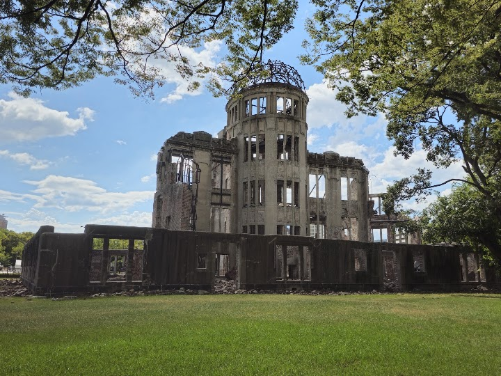
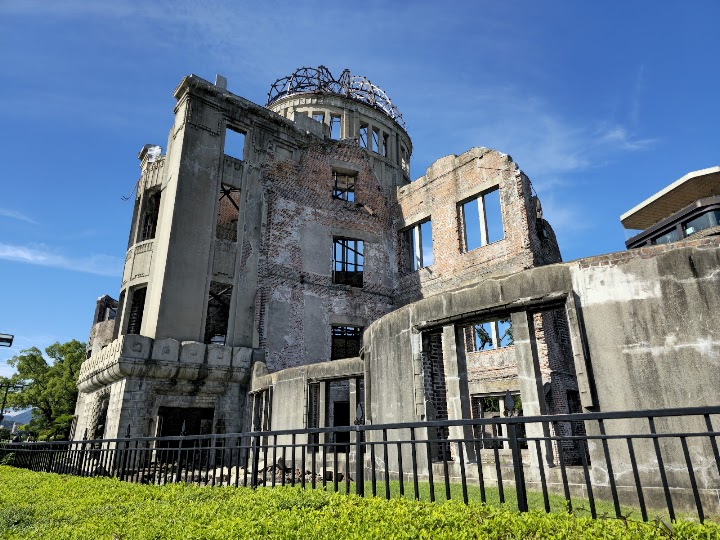
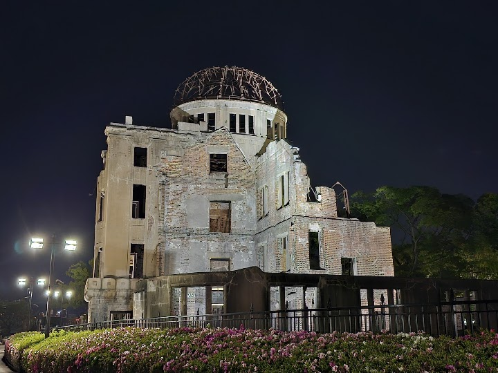
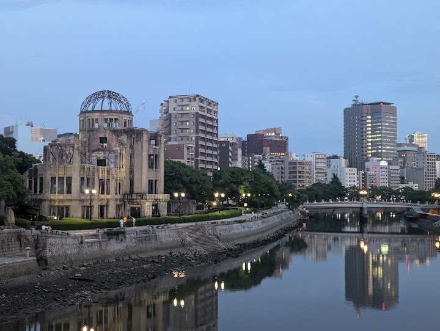
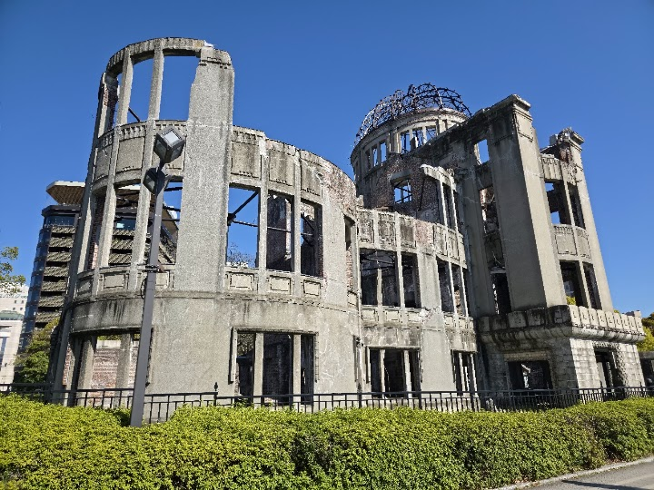

Atomic Bomb Dome
Iconic remains of the Industrial Promotion Hall which was destroyed by the atomic bomb during WWII.
Open in Google Maps (street view, more photos and reviews there)






Visitor tips on finding it and getting there
The Atomic Bomb Dome and Peace Park are incredibly moving. It's a wonderful reminder to all the effects of an atomic bomb and war. When in Japan, you should try to get down to Hiroshima to visit the Atomic Bomb Dome and surrounding park area. You just can't imagine what it would have been like for the people living here when the bomb was dropped. The city certainly has grown into a beautiful place to visit keeping the history alive through this site.
A Powerful and Unforgettable Historical Landmark During our recent family trip to Japan, visiting the Atomic Bomb Dome in Hiroshima was one of the most emotional and meaningful experiences of our journey. As a visitor from Sri Lanka, standing before this historic structure gave me a profound appreciation of both the tragedy of war and the importance of peace. The preserved ruins serve as a powerful reminder of the events of August 6, 1945. Seeing the building in person is far more impactful than viewing photographs or reading about it in history books. The structure stands silently yet power